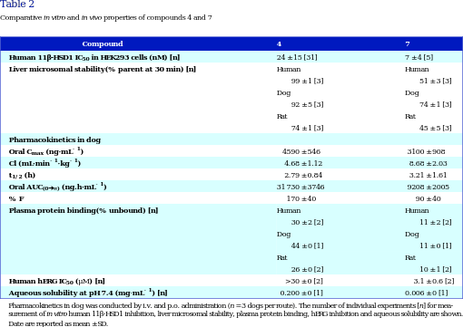
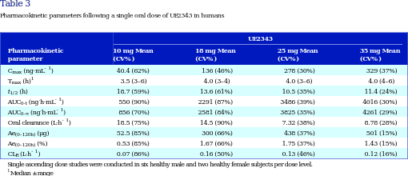

|

corpus-oa-validation/10.1111_bph.13699/tables/table2/table.svg.png
|
| Human 11β-HSD1 IC _{50} Liver microsomal stability(% parent at 30 min) [n] Pharmacokinetics in dog Oral C _{max} (ng·mL ^{-1} ) Cl (mL·min ^{-1} ·kg ^{-1} ) t _{1/2} (h) Oral AUC _{(0➔} _{∞)} (ng.h·mL ^{-1} ) % F Plasma protein binding(% unbound) [n] Human hERG IC _{50} (μM) [n] Aqueous solubility at pH 7.4 (mg·mL ^{-1} ) [n] |
in HEK293 cells (nM) [n] |
24 ± 15 [31] Human 99 ± 1 [3] Dog 92 ± 5 [3] Rat 74 ± 1 [3] 4590 ± 546 4.68 ± 1.12 2.79 ± 0.84 31 730 ± 3746 170 ± 40 Human 30 ± 2 [2] Dog 44 ± 0 [1] Rat 26 ± 0 [2] >30 ± 0 [2] 0.200 ± 0 [1] |
7 ± 4 [5] Human 51 ± 3 [3] Dog 74 ± 1 [3] Rat 45 ± 5 [3] 3100 ± 908 8.68 ± 2.03 3.21 ± 1.61 9208 ± 2005 90 ± 40 Human 11 ± 2 [2] Dog 11 ± 0 [1] Rat 10 ± 1 [2] 3.1 ± 0.6 [2] 0.006 ± 0 [1] |
| Pharmacokinetics in dog was conducted by i.v. and p.o. administration (n = 3 dogs per route). The number of individual experiments [n] for mea- |
| surement of in vitro human 11β-HSD1 inhibition, liver microsomal stability, plasma protein binding, hERG inhibition and aqueous solubility are shown. |
| Date are reported as mean ± SD. |
corpus-oa-validation/10.1111_bph.13699/tables/table2/table.svg.html
|

corpus-oa-validation/10.1111_bph.13699/tables/table4/table.svg.png
|
| C _{max} T _{max} t _{1/2} (h) AUC _{0–12h} Oral clearance (L·h ^{-1} ) Ae _{(0–12h)} (μg) Ae _{(0–12h)} (%) |
(ng·mL ^{-1} ) (h) ^{1} (ng h·mL^{.} ^{-1} ) |
29.1 (61%) 6.0 (4–8) nd 207 (79%) nd 34.6 (50%) 0.35 (50%) |
89.2 (71%) 4.0 (3–10) nd 623 (69%) nd 107 (92%) 0.54 (92%) |
268 (34%) 4.0 (3–6) nd 1843 (33%) nd 362 (46%) 1.03 (46%) |
207 (58%) 4.0 (3–6) 13.8 (21%) 1917 (66%) 7.24 (60%) 408 (46%) 4.08 (46%) |
365 (29%) 3.0 (2–6) 11.2 (25%) 3175 (30%) 6.85 (33%) 644 (38%) 3.22 (38%) |
892 (30%) 4.0 (3–6) 9.99 (14%) 7909 (36%) 5.02 (43%) 1345 (29%) 3.84 (29%) |
| Multiple ascending dose studies were conducted in eight healthy male subjects per dose level. |
| ^{1 Median ± range} |
corpus-oa-validation/10.1111_bph.13699/tables/table4/table.svg.html
|
|

corpus-oa-validation/10.1111_bph.13699/tables/table3/table.svg.png
|
| C _{max} T _{max} t _{1/2} (h) AUC _{0-t} AUC _{0-∞} Oral clearance (L·h ^{-1} ) Ae _{(0–120h)} (μg) Ae _{(0–120h)} (%) CL _{R} (L·h ^{-1} ) |
(ng·mL ^{-1} ) (h) ^{1} (ng h·mL^{.} ^{-1} ) (ng h·mL^{.} ^{-1} ) |
40.4 (62%) 3.5 (3–6) 18.7 (59%) 550 (90%) 856 (70%) 18.5 (75%) 52.5 (85%) 0.53 (85%) 0.07 (86%) |
136 (46%) 4.0 (3–4) 13.6 (61%) 2291 (87%) 2581 (84%) 14.5 (90%) 300 (66%) 1.67 (66%) 0.16 (50%) |
278 (30%) 4.0 (3–6) 10.5 (35%) 3486 (39%) 3825 (35%) 7.32 (38%) 438 (37%) 1.75 (37%) 0.13 (46%) |
329 (37%) 4.0 (4–6) 11.4 (24%) 4016 (30%) 4261 (29%) 8.78 (28%) 501 (15%) 1.43 (15%) 0.12 (16%) |
| Single ascending dose studies were conducted in six healthy male and two healthy female subjects per dose level. |
| ^{1 Median ± range} |
corpus-oa-validation/10.1111_bph.13699/tables/table3/table.svg.html
|

corpus-oa-validation/10.1111_bph.13699/tables/table1/table.svg.png
|
| 1 2 3 4 5 6 7 8 9 |
OH OH OH OH OH F CN CN |
F |
22 ± 2 [2] 26 ± 8 [3] 12 ± 0 [1] 24 ± 15 [31] 37 ± 3 [2] 22 ± 10 [4] 7 ± 4 [5] 15 ± 0 [1] 13 ± 3 [3] |
5.0 5.4 5.0 5.2 5.2 5.4 5.4 5.6 5.3 |
419 ± 28 1270 ± 330 115 ± 48 1539 ± 657 589 ± 161 399 ± 99 1526 ± 212 291 ± 74 230 ± 33 |
29 ± 10 31 ± 12 36 ± 12 173 ± 80 19 ± 17 108 ± 54 374 ± 184 9 ± 3 15 ± 1 |
0.07 0.02 0.31 0.11 0.03 0.27 0.24 0.03 0.07 |
| Plasma and brain levels were determined as described in the |
section using n = 3 rats per time point. The number of individual experiments [n] for |
| measurement of in vitro human 11β-HSD1 inhibition are shown. Data are reported as mean ± SD. |
|
corpus-oa-validation/10.1111_bph.13699/tables/table1/table.svg.html
|

corpus-oa-validation/10.1111_bph.13699/tables/table5/table.svg.png
|
| C _{CSF,} _{5h} C _{max} (ng·mL ^{-1} ) T _{max} (h) ^{1} t _{1/2} (h) AUC _{0–12h} (ng.h mL ^{-1} ) |
(ng·mL ^{-1} ) |
nd 235 (60%) 5.1 (4–6) 6.24 (82%) 1710 (66%) |
69.8 (44%) 708 (59%) 5.1 (3–5) 8.97 (39%) 5670 (81%) |
| The study was conducted in four healthy subjects. |
| ^{1 Median ± range} |
corpus-oa-validation/10.1111_bph.13699/tables/table5/table.svg.html
|